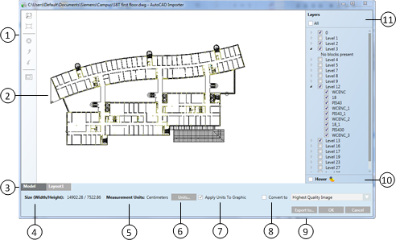

AutoCAD Importer
The AutoCAD Importer window consists of a drawing preview pane that contains a toolbar menu, tabbed layout of included Model and Layout space, as well as a section for selecting/deselecting layers and blocks from the drawing preview.
For more information on AutoCAD Importer Workspace, select one of the following:
AutoCAD Importer Window
The AutoCAD Importer allows you to preview and customize a supported 2D AutoCAD file and then import the file into a graphic as an XPS element of a .CCG graphic. You can also save a DWG or DWF drawing as a DWFx file.

AutoCAD Importer | |
| Description |
1 | AutoCad Importer Toolbar Menu Displays the tools for navigating and editing within the AutoCAD Importer. |
2 | Drawing Preview Pane Displays the DWG or DWF drawing that will be imported as an XPS or exported as a DWFx drawing. |
3 | Model and Layout Tabs Drawing objects and paper space that are associated with the drawing. Model tab – displays the original drawing objects. Layout tabs – display the various views of the original drawing. |
4 | Size (Width/Height) Displays the dimension settings of the image in their proprietary units: width and height. |
5 | Measurement Units Displays the type of measurement assigned to the drawing. Options include metric and English units. |
6 | Change Units Button Opens the Unit Settings dialog box, where you can select the type of measurement (metric, English, and so on) for the image, and adjust its width and height settings. If selected, the Unit Settings dialog box displays. |
7 | Apply Units To Graphic Applies the selected units to the graphic image. |
8 | Convert to Image When checked, the file converts to an Image element, instead of an XPS file. You must select one of the following quality levels from the drop-down menu:
|
9 | Export to Displays the Export to dialog box that allows you to save the modified drawing as a DWFx file. |
10 | Hover If checked, when a layer check box is unchecked, you can hover over the layer check box and see the layer added to the drawing in the preview pane. When you move the cursor away from the check box, the layer contents are not displayed. |
11 | Layers Allows you to select the layers and blocks to be included in the import of the drawing. |
Toolbar Buttons
The AutoCAD Importer toolbar allows you to perform navigation and editing operations when importing AutoCAD files.
AutoCAD Importer Toolbar | ||
Icon | Name | Description |
Zoom to Window | When active, allows you to magnify a specified area of the displayed graphic. | |
Zoom to Extents | Resets the zoom-factor so that all drawing items are visible in the Importer preview pane. | |
Delete | Allows you to delete selected objects on the displayed drawing. | |
Undo All | Allows you to reverse all changes and revert to the original state. | |
Redo All | Allows you to reinstate all changes made since the last Undo All command. | |
Crop Mode | Allows you to customize the drawing by eliminating portions of the drawing you do not want to import. | |
Keyboard and Mouse Navigation
Zoom +/-
Place the mouse over the drawing in the Importer pane, and use the scrolling wheel to zoom in and out of the drawing.
Pan Mode
SPACE key and mouse. Press the SPACE key to activate the Pan Mode cursor, and while pressing SPACE, move the drawing in the Model or Layout tab.
Related Topics
For background information, see AutoCAD File Import.
For keyboard shortcuts, see Keyboard Shortcuts.